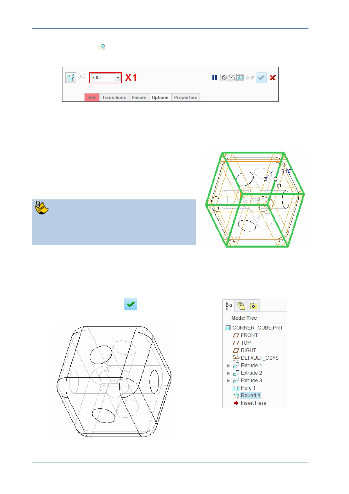

PTC Academic Program
4. Start the Round
tool from the Engineering group of the Model tab.
Notice the Round dashboard and the feature options.
5. Defining the radius of the round:
In the dashboard, edit the radius X1 to be 5 and press ENTER .
6. Selecting the edges to round:
Click to select one of the edges shown in
green .
Press CTRL and select the remaining 11
edges shown in green .
If you select an edge by accident, keep the
CTRL key held down and click the edge
again to de-select.
If you need to re-open the round dashboard, right-click the Round 1 feature in the
model tree and select Edit Definition from the pop-up menu.
7. Click Complete Feature
to complete the
round.
© 2012 PTC
Creo Parametric 2.0 Primer
Page 39